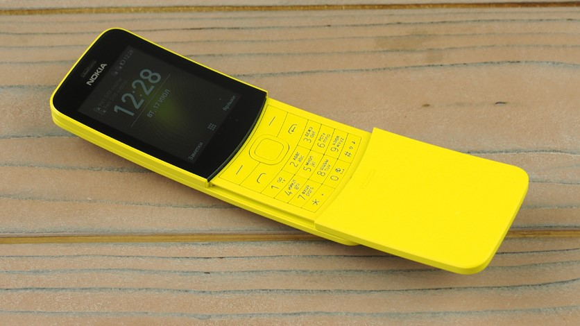
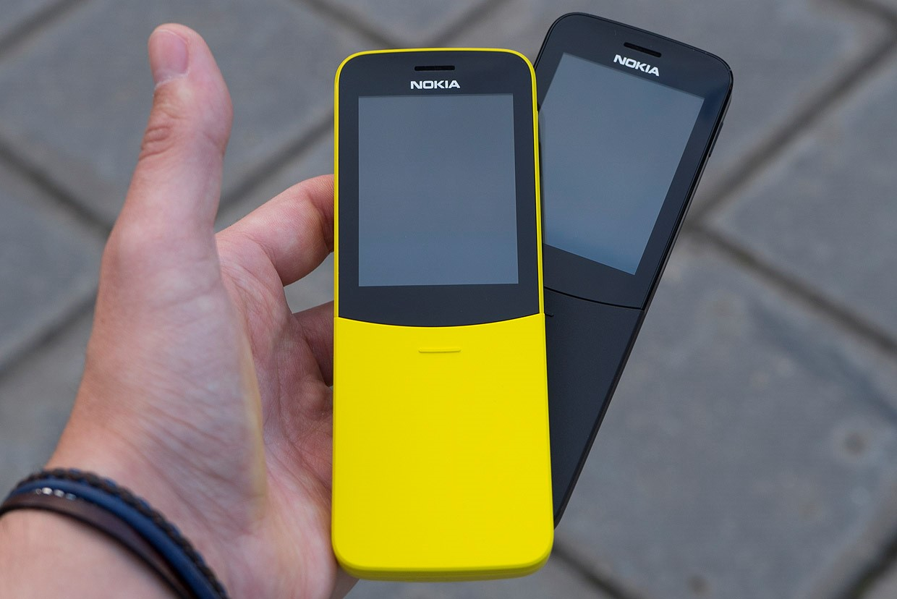

Идея кнопочного телефона с современным «железом» и расширенным функционалом буквально витала в воздухе. Эксперименты начались с премиального сегмента, в котором была представлена «раскладушка» от Samsung. Компания HMD Global решила сделать ставку на бюджетный класс — именно к нему относится мобильный телефон Nokia 8110 4G Black.
Основа девайса — платформа Qualcomm Snapdragon 205 с двухъядерным процессором и 512MB оперативной памяти. Производитель не стал идти на компромиссы и адаптировать Android под нужды специфичного устройства, поэтому здесь используется операционная система собственной разработки — Smart Feature OS. С другими характеристиками Nokia 8110 4G Black можно ознакомиться в таблице.
| Тактовая частота процессора, ГГц | 1,1 |
| Встроенная память / расширение | 4GB / MicroSD до 64GB |
| Экран | 2,45” TFT TN 320*240 |
| Диапазоны связи | GSM 900/1800, EDGE, UMTS, HSPA+, LTE Cat.4 |
| Тип SIM-карт | Nano-SIM и Micro-SIM, Dual Standby |
| Беспроводные модули | Bluetooth 4.1, Wi-Fi a/b/g/n, A-GPSB |
| Аккумулятор | Li-ion, 1500 мА*ч, съемный |
| Камера | 2 Мп, со вспышкой |
| Размеры, мм | 134*49*15 |
| Масса, г | 117 |
Устройство поставляется в простой коробке с прозрачным верхом. В ее нижнюю часть компания Nokia вкладывает аккумулятор, зарядное устройство с интерфейсом MicroUSB, инструкцию по использованию и гарнитуру. Последняя предназначена в первую очередь для звонков — ждать от нее чудес в плане музыки не приходится.
Главное «оружие» мобильного телефона — оригинальный дизайн. Изогнутый корпус красив и удобен. Он привлекает внимание окружающих и прочно лежит в руке. Особенно выигрышно смотрится модель желтого цвета — от сравнения с бананом удержаться невозможно! Весело, модно и молодежно. К сожалению, черный телефон лишен вау-эффекта — при первом взгляде его невозможно отличить от других кнопочных устройств.
Клавиатура прикрыта сдвижной крышкой, которая защищает кнопки от случайных нажатий в кармане. Сдвинув ее вниз, можно принять входящий звонок, а подняв — завершить разговор. Владельцам классических моноблоков понадобится время, чтобы привыкнуть к такой функции. Однако уже через пару дней они будут пользоваться ею без раздумий.
Если оригинальные слайдеры финского бренда в 2000-х годах могли похвастаться «неубиваемыми» металлическими корпусами, то здесь используется обычный пластик. Матовая поликарбонатная поверхность приятна на ощупь и практична — она не собирает отпечатки пальцев. Отсутствие скрипов говорит о качественной сборке и тщательной подгонке деталей. Но ждать особой прочности не приходится — с телефоном лучше обращаться аккуратно.
Особенность устройства — поддержка высокоскоростных мобильных сетей 4G. Зачем она здесь? Телефон предлагает удобный браузер, встроенный клиент Twitter и ссылки на популярные мультимедийные сервисы, включая YouTube. Он умеет проверять почту Gmail и загружать контакты из облачного хранилища Google Drive. Предустановленных мессенджеров нет, поэтому для общения онлайн приходится пользоваться их браузерными версиями — далеко не самое удобное решение. Гораздо важнее, что телефон поддерживает работу в режиме точки доступа. Он создает сеть Wi-Fi с пропускной способностью до 40 Мбит/с. Этого достаточно для просмотра HD-видео на ноутбуке и смартфоне, а также для онлайн-игры на портативной консоли. Чтобы уменьшить энергопотребление, можно воспользоваться встроенным модемом в проводном режиме. Для этого стоит подключить устройство к компьютеру через USB-порт.
Прежде всего, мобильный телефон Nokia 8110 4G Black — это имиджевая модель, которая рассчитана на поклонников бренда и любителей нестандартных дизайнерских решений. Поддержка LTE станет плюсом для тех, кто изредка пользуется мобильным интернетом — например, для проверки почты и чтения новостей. Перспективы развития операционной системы неясны, поэтому говорить о дальнейшем расширении функционала пока рано.